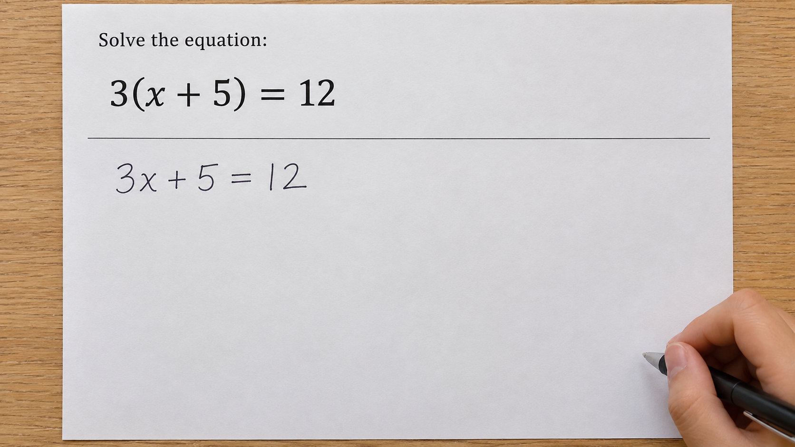
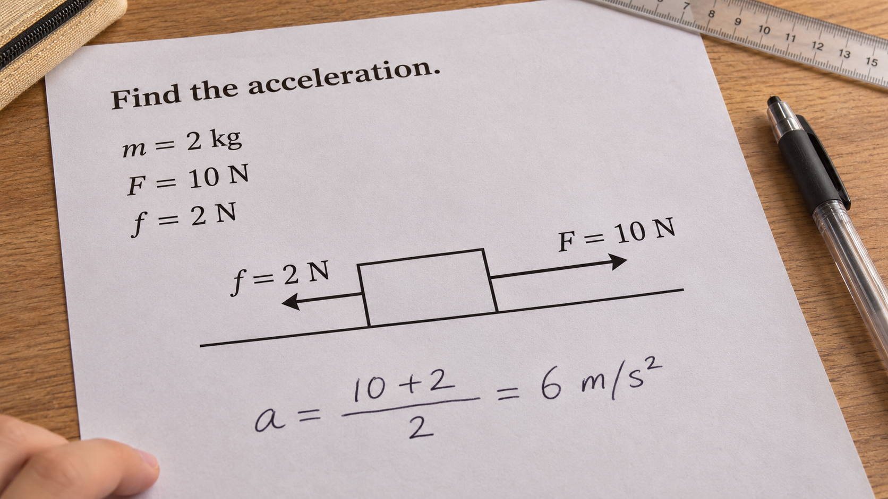
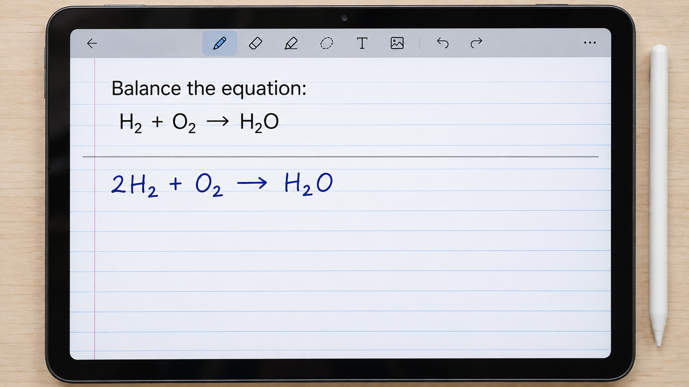
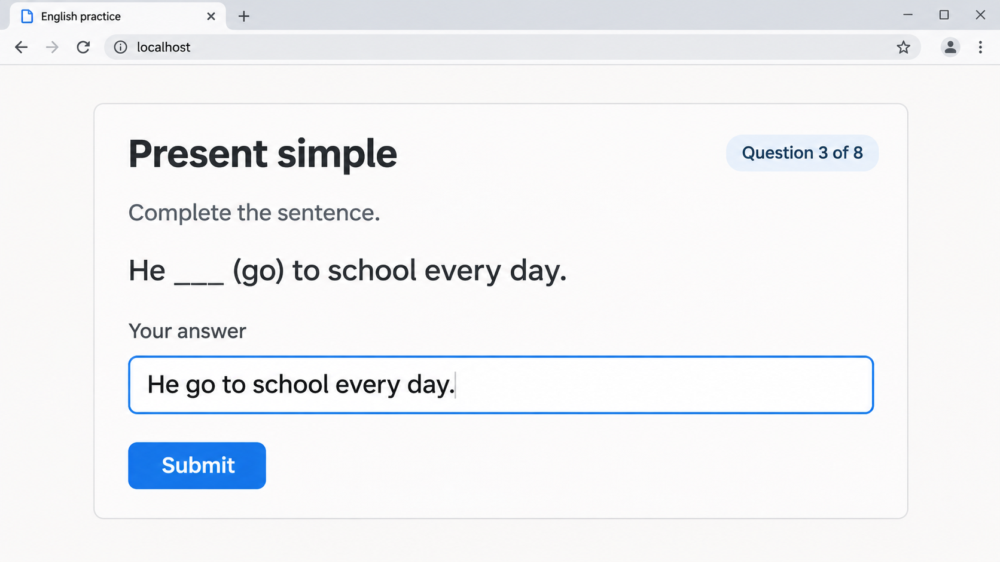
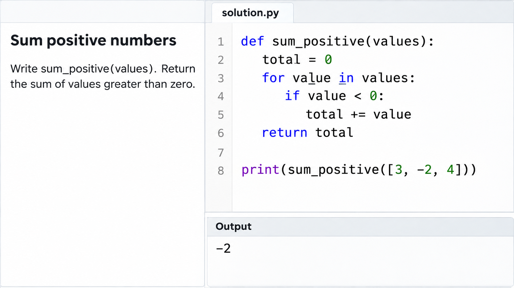
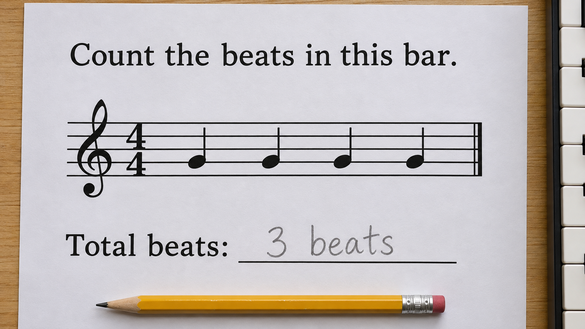

M1 / TRAJECTORY MEMORY
记住题目，也记住修订
任务 → 证据 → 尝试 / 修订 → 错误实例。题干与学生步骤分开；旧墨迹不重复触发，新尝试中的错误仍可被发现。
以教学为应用载体，研究 omni realtime interactive model 能否联合理解连续画面、真实声音与交互历史，并在恰当时刻回应、示范、等待和调整。从学前游戏到中学解题，覆盖听写、朗读、演奏与操作。
Omni 实时交互模型能否跟上学生正在做什么、听懂在对谁说话，并让教学持续推进？
点击节点查看当时的上下文与动作。
同样的画面，可能需要完全不同的介入。
任务 → 证据 → 尝试 / 修订 → 错误实例。题干与学生步骤分开；旧墨迹不重复触发，新尝试中的错误仍可被发现。
模型结合轨迹判断接话、等待或主动提示。Harness 管理动作生命周期，处理插话、取消与过期结果，避免重复讲解。
前台保持交流，后台并行备课。课件、任务版本、旁白段落与播放游标关联；打断后从合适位置继续，重讲时复用课件。
待检验假设：显式管理轨迹与交付状态，可在相同底座、工具和预算下，提高及时有效介入与全轨迹成功率。接话对象由模型判断。
样本单位是完整 episode。
每个关键事件都有证据、时间窗口和可判定动作。
听懂学生指向哪一步；区分提问、自言自语与旁人说话；保留题目、当前步骤和历史修订。
稳定新错及时提醒，半步书写和自我改正时等待；判断是否需要演示，并传递正确题目与错误证据。
讲解正确、演示清晰，口头与视觉一致；学生插话能及时停声，继续时接回正确位置。
按独立时钟播放，只提供当前及过去输入。测感知、判断、介入时机；未来事件与标注真值仅供评分。
分支轨迹或真人响应教学动作。测打断、恢复与教学闭环；模拟学生成绩不直接等同于学习增益。
覆盖学前、小学与中学。每类任务都需可观察的音视频证据、可判定动作与时间窗口。
| 任务族 | 任务拆分 | 音视频交互证据 |
|---|---|---|
| 辨认与选择 | 命名 · 定位 · 匹配 · 分类 · 排序 · 比较 | 听指令指物、举物或分类，联合判断声音与动作。 |
| 听写与记忆提取 | 单词 / 句子听写 · 汉字 / 古诗默写 · 补全 | 报词后观察落笔，处理重读请求、自改与完成时机。 |
| 朗读与表达 | 跟读 · 朗读 · 背诵 · 复述 · 看图描述 · 情境对话 | 对齐教材位置与实际语音，区分停顿和说完。 |
| 解题与解释 | 计算 · 推导 · 作图 · 证明 · 读图 · 思路解释 | 关联口头解释、指向和书写步骤，跟随修订。 |
| 模仿与练习 | 节奏模仿 · 视唱 · 接唱 · 指法 · 乐器演奏 | 同时看谱、看手、听演奏，定位音高与节奏偏差。 |
| 操作与构建 | 摆放 · 拼搭 · 测量 · 折纸 · 实验 · 软件操作 | 观察执行顺序与结果，按当前进展给下一步指令。 |
| 创作与修改 | 绘画 · 编故事 · 写作 · 旋律创作 · 作品修改 | 结合过程和学生表达的意图，提供针对性反馈。 |
| 检查与纠正 | 找错 · 核对 · 自我修正 · 比较解法 · 修改后重试 | 跨任务叠加；区分正在自改和需要帮助。 |
模型发起 → 孩子用声音或动作回应 → 模型根据真实回应继续。优先积木指令与节奏模仿，再扩展找物和绘本共读。
放对积木即使未说话也算完成；口头说对、操作错误不能判成功。回应不清时澄清，无回应时等待或简化，拒绝或离开时暂停。
分支脚本可评测模型响应；真实幼儿的参与度与使用效果需另行验证。
| 事件类别 | 候选情况 | 期望行为 |
|---|---|---|
| 环境噪声 | 风扇、敲桌、翻纸、键盘、突发碰撞 | 维持任务；听不清时请求重说。 |
| 背景语音 | 电视、音乐、旁人聊天 | 不将背景内容误当作学生请求。 |
| 接话对象 | 学生问家长、与同学交流、回应老师 | 判断是否在对 AI 说话，避免抢答。 |
| 自言自语 | 默念题目、试探答案、表达挫败 | 结合过程决定等待或帮助。 |
| 多人交叠 | 同时说话、旁人代答 | 跟随目标学生，不把代答算作其完成。 |
| 音画冲突 | 说已完成但仍在写；说“这个”但指向另一处 | 联合判断，必要时澄清。 |
| 对话控制 | 插话、停止、继续、重说、放慢、换种讲法 | 执行控制，保留任务与交付位置。 |
| 任务变化 | 自改、撤销、换题、翻页、返回旧题 | 更新状态，取消或忽略过期帮助。 |
| 离开与返回 | 转身、出画、与他人交流后回来 | 等待或暂停，回来后接续。 |
同一句“这个怎么做”，对 AI 与对同学说应有不同动作；同一句“再来一次”，听写应重读、音乐应重示范。相同画面配不同报词或演奏，答案应随声音变化；相同错字配不同修订历史，介入时机应不同。
现有六张图片展示部分视觉条件，可点击查看原图。以下为 AI 合成静态示例，不代表完整音视频 episode；听写、演奏与学前操作需补充真实声音和连续动作。

观察节点题干与步骤区分；学生漏乘常数。
3(x+5)=12 应展开为 3x+15=12。原题中的括号是题目的一部分。

观察节点识别力的方向，并核对学生的运算步骤。
质量 2kg，拉力与摩擦力相反。a=(10−2)/2=4m/s²。

观察节点区分下标与系数；检查元素守恒。
配平为 2H₂+O₂→2H₂O。题干的待配平式与学生答案分区展示。

观察节点结合题目、答题框与输入状态定位语法问题。
应为 He goes to school every day. 直接屏幕采集不包含显示器边框与桌面。

观察节点关联任务要求、代码修改和实际运行结果。
value<0 实际筛选负数，应为 value>0。[3,−2,4] 的正数和是 7；图中 −2 是错误程序的真实逻辑输出。

观察节点识别音符时值，检查学生的拍数判断。
4/4拍中四个无附点四分音符共4拍。本图展示乐理识读；演奏判断需要另外提供音频。
| 原生 Realtime Tutor | 充分调优的辅导提示，可主动介入，拥有相同工具。 |
| History-aware Agent | 历史画面、滚动记忆与异步工具，可自主维护状态。 |
| OmniTutor Harness | 显式轨迹、介入身份、任务版本与教学交付状态。 |
模型比较采用统一任务、输入与预算协议，披露各模型支持的模态与流式交互方式；同底座比较 Harness 与强基线，再做机制消融。级联 ASR / VLM 系统单列协议，报告实际调用、成本和失败。
机制消融 去轨迹修订记忆 / 去教学交付状态 / 去任务版本绑定 / 去并行备课与复用。
贡献成立需要比较实验和机制归因。
当前页面呈现设计，不提供未运行的性能数字。
同步音视频、任务进展、事件标注与动作窗口；覆盖任务、视角和干扰，设置音画及历史依赖配对。领域评分与校准后的辅助评分结合。
主比较与消融之外，构造“当前画面相同、历史不同”的配对轨迹，检验旧错已讲、新尝试复发、换题和课件已生成但未交付。
用统一时间轴关联原始证据、系统动作、后台产物与实际播放。呈现完整成功及失败案例，并排对照 baseline 行为。